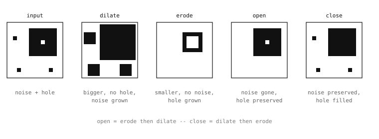

5.15. モルフォロジー演算¶
モルフォロジー 演算は 2 値画像 -- しきい値処理やエッジ検出から得られるマスク -- に対して働きます。各演算は平滑化フィルタが使うのと同じ種類のスライドする近傍を走査しますが、各位置で問う内容は yes/no です。すなわち、近傍の すべての ピクセルがオンか、近傍の いずれかの ピクセルがオンか、オン/オフのパターンはどのように見えるか、です。これらの答えは、平均化フィルタにはできない形で領域を成長させ、縮小させ、その境界を切り直します。
モルフォロジーは、初期 の 2 値マスク -- しきい値処理、エッジ検出、あるいは他の何らかの分類器の出力 -- と、パイプラインの残りが使える きれいな 2 値マスクとの間に来るものです。生のしきい値出力は通常、真の前景領域の中に散らばった孤立したノイズピクセル、それ以外は固まった領域に開けられた小さな穴、そしてしきい値が物体のエッジ近くで切れたためにギザギザになった境界を持っています。モルフォロジーはこれらの欠陥を除去します。
5.15.1. 4 つの古典的な演算¶
2 つの基本演算と、それらを組み合わせた 2 つの演算が、モルフォロジーのツールキットを構成します。
dilate() はすべての前景領域を 成長させます。ルールはこうです。(2 * size + 1) のウィンドウ内に少なくとも 1 つの前景の隣接ピクセルを持つ任意のピクセルが前景になります。目に見える効果は、前景領域があらゆる方向に size ピクセルずつ大きくなり、その内部の 穴 が同じ量だけ縮小する（または消える）ことです。
erode() はその逆を行います。ウィンドウ内の すべての 隣接ピクセルが前景でないような任意のピクセルが背景になります。前景領域はあらゆる方向に size ピクセルずつ小さくなり、孤立した前景ピクセル（前景の隣接ピクセルを持たないもの）は完全に消え、より大きな領域どうしの小さなつながりが切断されます。

ノイズの多い 2 値領域に適用された 4 つの古典的なモルフォロジー演算。Erode は縮小させ、dilate は成長させる。Open は erode に続いて dilate を行い（ノイズを除去）、close は dilate に続いて erode を行う（穴を埋める）。¶
open() は erode に続いて dilate を行うものです。erode された画像はすべての孤立したノイズピクセルが除去されていますが、あらゆる方向に size ピクセルずつ縮小もされています。erode の後に同じサイズの dilate を続けることで、ノイズを消したまま、本物の前景領域をほぼ元の境界に復元します。この組み合わせが、open を古典的モルフォロジーにおける標準的な「ノイズ除去」演算にしています。孤立した前景ピクセルは消え、本物の領域は無傷で戻ってきます。
close() はその鏡像 -- dilate に続いて erode -- です。dilate は前景領域内の小さな穴を埋め、小さな隙間で隔てられた領域どうしをつなぎます。erode は埋められた内部を固まったまま残しつつ、結果を元の外側の境界まで縮小し直します。close は標準的な「小さな隙間を埋める」演算です。
binary_mask.open(1) # remove single-pixel noise
binary_mask.close(2) # fill small holes and gaps
size パラメータは明るさフィルタと同じ意味を持ちます。size=1 は 3×3 の近傍、size=2 は 5×5、というようになります。サイズが大きいほどクリーンアップが積極的になり、ピクセルあたりのコストも長くなります。
5.15.2. トップハットとブラックハット¶
さらに 2 つの組み合わせは知っておく価値があります。なぜなら、open と close が除去する特徴を まさに 抽出するからです。
top_hat() は、元の画像とその open された版との 差 -- open が除去したであろう前景ピクセル -- を返します。それは文字通り、ノイズピクセル、孤立した小さな前景領域、open 演算が保持できなかった細い前景構造のマスクです。それらの特徴がアプリケーションの関心事である場合に、それらを除去するのではなく 抽出する のに有用です。
black_hat() は、画像の close された版と元の画像との 差 -- close が埋めたであろう背景ピクセル -- を返します。それは、前景領域内の小さな穴、close 演算が橋渡ししたであろう領域間の狭い隙間のマスクです。
どちらも 4 つの基本演算ほど一般的には使われませんが、このパターンは覚えておく価値があります -- 標準的なクリーンアップ処理が 除去する 小さなまたは細い特徴をアプリケーションが抽出する必要がある場合、トップハットとブラックハットはそれらを取り戻す自然な方法です。
5.15.3. しきい値モード¶
4 つの基本的なモルフォロジー演算はすべて、各位置でのオン/オフのテストを緩める整数の threshold キーワードを受け付けます。これがない場合、演算は上の説明どおりに振る舞います。すなわち erode() は すべての 隣接ピクセルがオンであることを要求し、dilate() は 少なくとも 1 つ を要求します。threshold を設定すると、各演算はその数だけの隣接ピクセルが反対に投票することを許容します。erode の場合、threshold はピクセルが持っていても生き残れる 背景の 隣接ピクセルの数です。threshold=4 は、8 つの隣接ピクセルのうち少なくとも 4 つがオンである任意のピクセルを保持する（3×3 のウィンドウでは中心ピクセルは 8 つの隣接ピクセルを持ちます）ため、それほど積極的には収縮しません。dilate の場合、threshold は背景ピクセルがオンになるために持っていなければならない 前景の 隣接ピクセルの追加数です。threshold=2 は 1 つではなく少なくとも 3 つの前景の隣接ピクセルを要求するため、それほど積極的には成長しません。
しきい値の形式は、ウィンドウのサイズを変えずにモルフォロジー処理の積極性を調整するのに有用です。ウィンドウのサイズを変えると、それが作用する特徴の スケール も変わってしまいます。ほとんどのアプリケーションはデフォルトの振る舞いのままにします。しきい値の形式は、デフォルトがほんのわずかに多すぎるか少なすぎる場合のために用意されています。